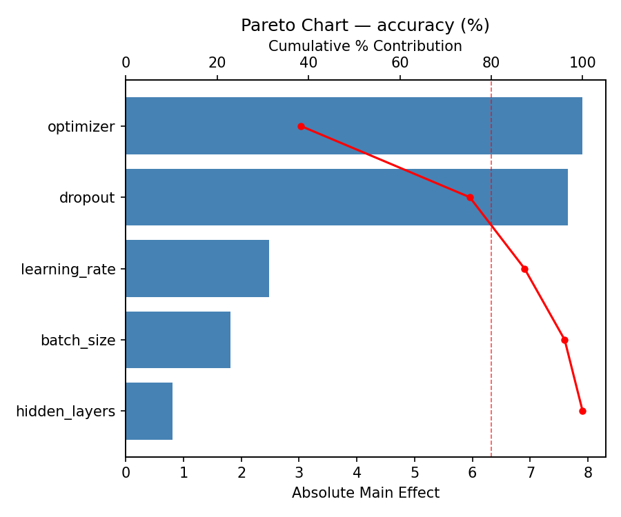
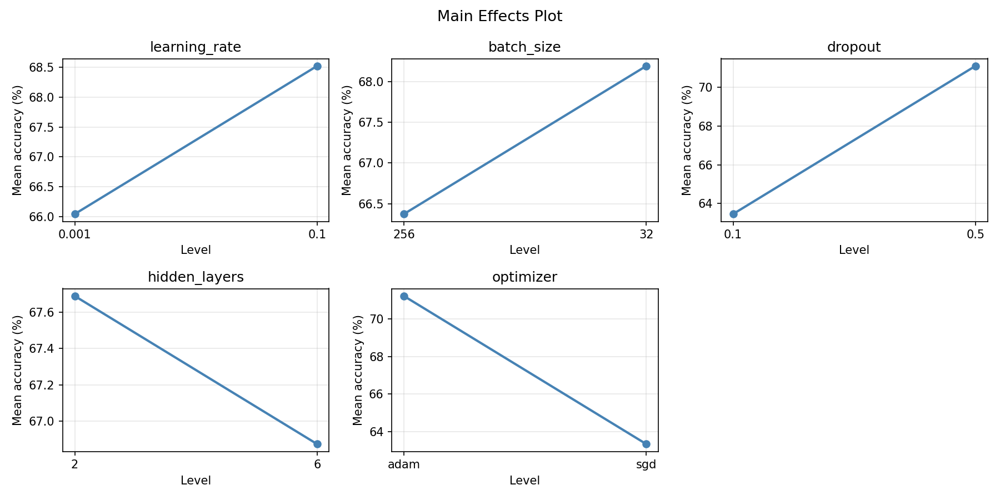
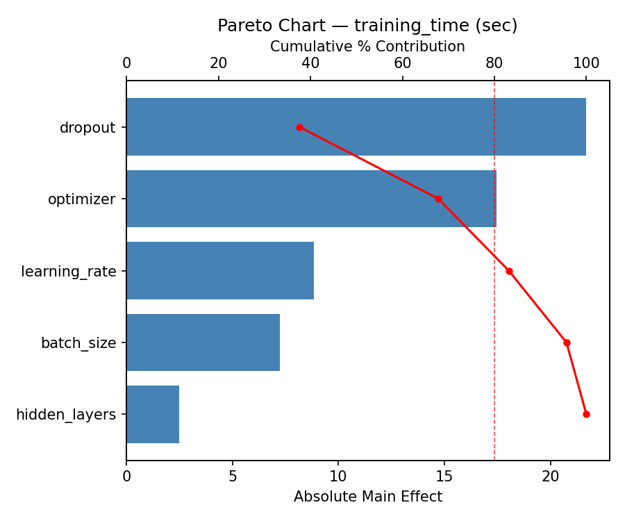
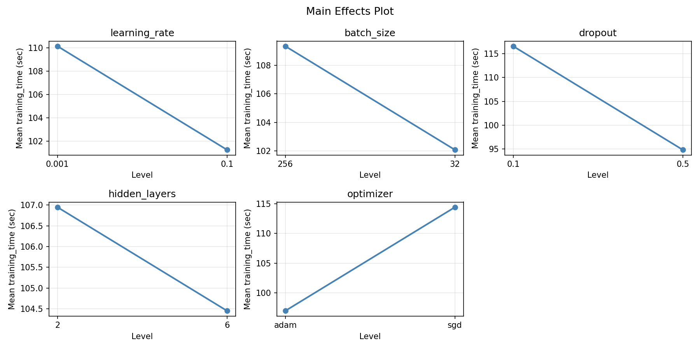
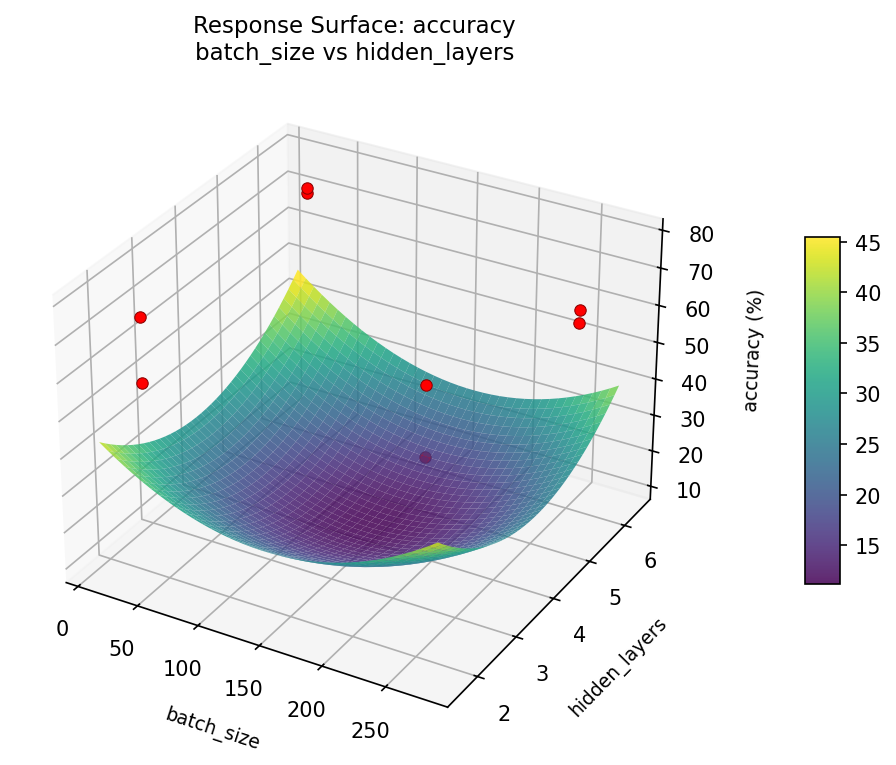
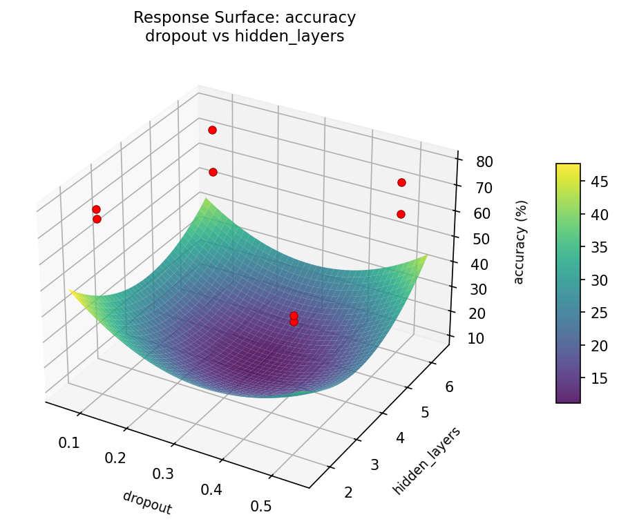
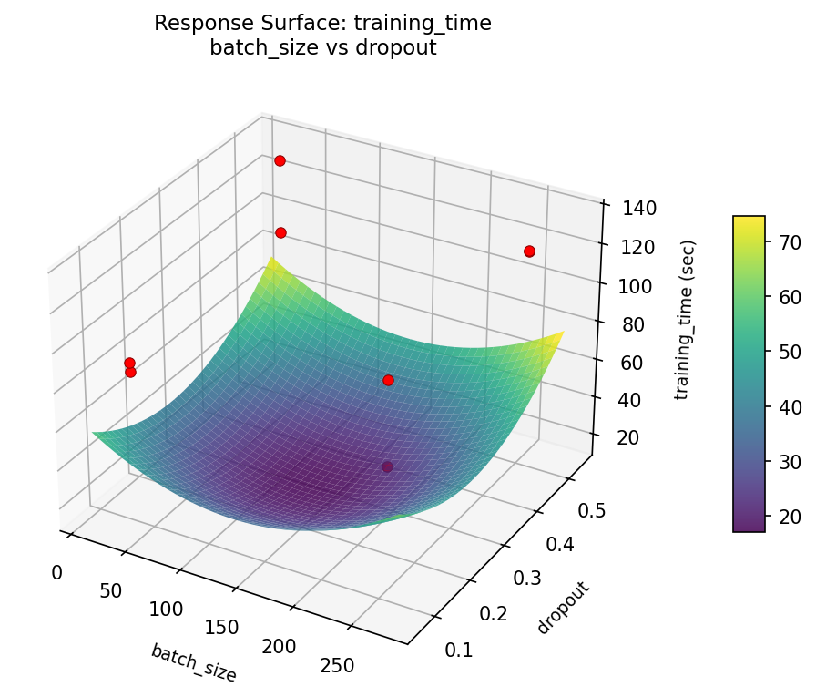
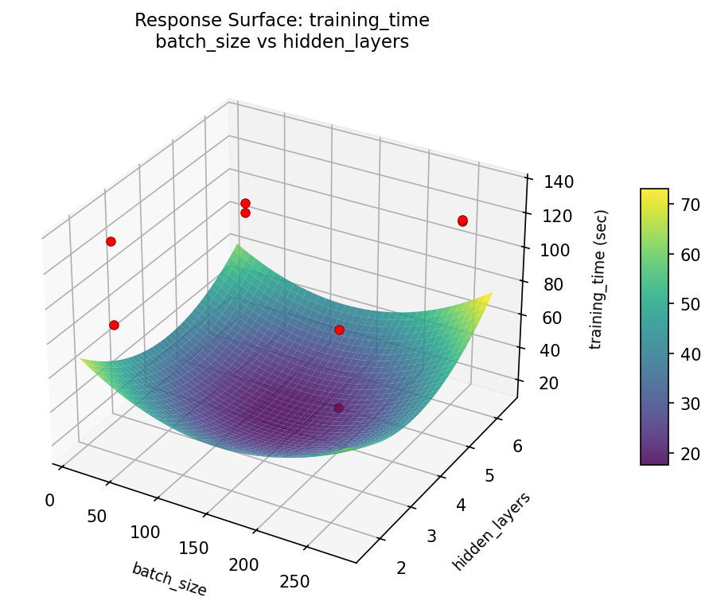
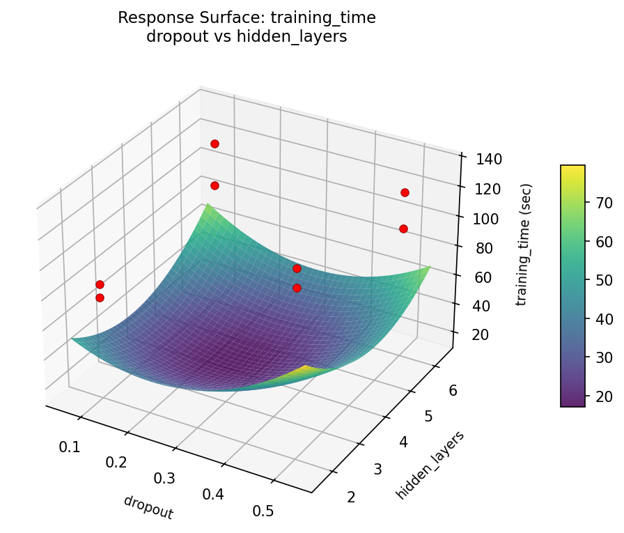
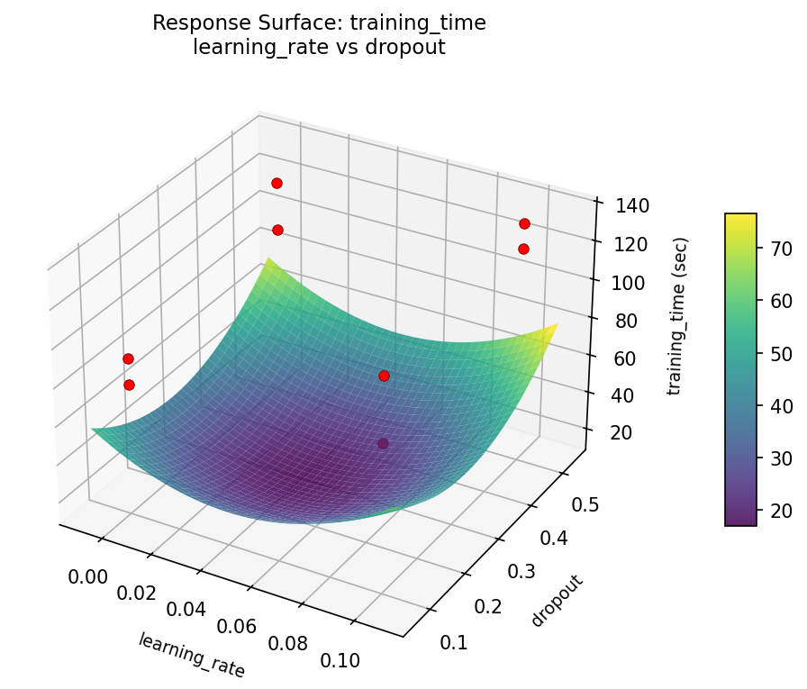

Screen 5 hyperparameters in 16 runs instead of 32 — saving expensive GPU time.
You are training a deep learning model and need to screen 5 hyperparameters to find which ones matter most. A full factorial would require 25 = 32 runs, and each training run takes significant GPU time. A fractional factorial cuts this in half.
Resolution III fractional factorial uses only 16 runs. You're screening — you just need to know which hyperparameters have the largest effects. Some main effects are aliased with 2-factor interactions, but follow-up experiments can resolve ambiguities.
| Factor | Low | High | Type |
|---|---|---|---|
learning_rate | 0.001 | 0.1 | continuous |
batch_size | 32 | 256 | continuous |
dropout | 0.1 | 0.5 | continuous |
hidden_layers | 2 | 6 | continuous |
optimizer | sgd | adam | categorical |
Fixed: epochs = 50, dataset = cifar10
| Response | Direction | Unit |
|---|---|---|
accuracy | ↑ maximize | % |
training_time | ↓ minimize | sec |
Look for factors that improve accuracy without hurting training time — those are the "free wins."
The Fractional Factorial Design produces 8 runs. Each row is one experiment with specific factor settings.
| Run | learning_rate | batch_size | dropout | hidden_layers | optimizer |
|---|---|---|---|---|---|
| 1 | 0.001 | 256 | 0.5 | 2 | sgd |
| 2 | 0.1 | 32 | 0.1 | 2 | sgd |
| 3 | 0.1 | 256 | 0.1 | 6 | sgd |
| 4 | 0.1 | 256 | 0.5 | 6 | adam |
| 5 | 0.001 | 256 | 0.1 | 2 | adam |
| 6 | 0.1 | 32 | 0.5 | 2 | adam |
| 7 | 0.001 | 32 | 0.1 | 6 | adam |
| 8 | 0.001 | 32 | 0.5 | 6 | sgd |
This use case uses positional args: factors are passed in order without flag names. The runner script calls sim.sh 0.001 32 0.1 2 sgd --out run_1.json. Useful when your training script expects ordered arguments.
| Feature | Value |
|---|---|
| Design type | fractional_factorial |
| Factor types | continuous (4) + categorical (1) |
| Arg style | positional |
| Run reduction | 16 runs instead of 32 (50% savings) |
| Multi-response | accuracy ↑, training_time ↓ |
--seed | 7 (reproducible run order) |
Generated from actual experiment runs using the DOE Helper Tool.
The Pareto chart identifies which hyperparameters contribute most to model accuracy.
Pareto Chart

Main Effects Plot

Training time is driven by a different set of hyperparameters, revealing trade-offs with accuracy.
Pareto Chart

Main Effects Plot

3D surfaces fitted with quadratic RSM. Red dots are observed data points.
Each plot shows predicted response (vertical axis) across two factors while other factors are held at center. Red dots are actual experimental observations.
accuracy (%) — R² = 1.000, Adj R² = 1.000
The model fits well — the surface shape is reliable.
Curvature detected in learning_rate, batch_size — look for a peak or valley in the surface.
Strongest linear driver: batch_size (decreases accuracy).
Notable interaction: learning_rate × hidden_layers — the effect of one depends on the level of the other. Look for a twisted surface.
training_time (sec) — R² = 1.000, Adj R² = 1.000
The model fits well — the surface shape is reliable.
Curvature detected in learning_rate, batch_size — look for a peak or valley in the surface.
Strongest linear driver: batch_size (increases training_time).
Notable interaction: learning_rate × hidden_layers — the effect of one depends on the level of the other. Look for a twisted surface.
accuracy: batch size vs dropout
accuracy: batch size vs hidden layers

accuracy: dropout vs hidden layers

accuracy: learning rate vs batch size
accuracy: learning rate vs dropout
accuracy: learning rate vs hidden layers
training: time batch size vs dropout

training: time batch size vs hidden layers

training: time dropout vs hidden layers

training: time learning rate vs batch size
training: time learning rate vs dropout

training: time learning rate vs hidden layers